Tekken
Board Game Arena 官方规则文档
TEKKEN – The Board Game: Rulebook / Livret de Règles.
Basics of the Game
Introduction
In TEKKEN – The Board Game, you step into intense head-to-head battles where every choice matters. Each opponent is unique, with a distinct fighting style, but the core rules apply to all. Your goal is simple – reduce your rival’s HP to zero – yet the path to victory is shaped by sharp thinking, reading your opponent, and precise timing.
On your turn, you will either:
- Predict which attack your opponent is about to unleash and counter it.
- Choose one of the three cards in your hand, play it face-down, and try to catch your opponent off guard.
It may sound like guessing, but this is far from random. Skilled players piece together clues: the combos an opponent might trigger, their position on the Stage, extensions from their previous cards, how many cards remain in their deck, and the current HP of both fighters. These details – and many more you’ll discover with experience – separate victory from defeat. Those who learn to read the fight will win more often, making this a true competitive game.
You can jump in and play right away, even with little experience, much like “button-mashing” in the video game. But the real satisfaction comes when you master the flow – chaining attacks into powerful combos, setting traps, and playing your cards in the perfect sequence.
This is not a random guessing game. It’s a duel of wits, reflexes, and adaptability – a tactical fight where anticipation and insight decide the outcome.
Goal of the Game
Defeat your opponent by reducing their HP (Health Points) to zero, thus winning the Round. By default you win the game when you win three rounds.
Introduction
Dans TEKKEN – Le jeu de société, vous vous lancez dans des combats intenses où chaque choix compte. Chaque adversaire est unique, avec un style de combat distinct, mais les règles de base s'appliquent à tous. Votre objectif est simple : réduire les PV de votre rival à zéro. Cependant, le chemin vers la victoire passe par une réflexion pointue, une bonne lecture de votre adversaire et un timing précis.
À votre tour, vous pouvez soit :
Prédire l'attaque que votre adversaire s'apprête à lancer et la contrer.
Choisir l'une des trois cartes de votre main, la jouer face cachée et essayer de prendre votre adversaire au dépourvu.
Cela peut ressembler à un jeu de devinettes, mais c'est loin d'être aléatoire. Les joueurs expérimentés rassemblent des indices : les combos qu'un adversaire pourrait déclencher, sa position sur le plateau, les extensions de ses cartes précédentes, le nombre de cartes restantes dans son deck et les PV actuels des deux combattants. Ces détails, et bien d'autres que vous découvrirez avec l'expérience, font la différence entre la victoire et la défaite. Ceux qui apprennent à lire le combat gagneront plus souvent, ce qui en fait un véritable jeu compétitif.
Vous pouvez vous lancer et jouer immédiatement, même avec peu d'expérience, un peu comme lorsque vous « martelez les boutons » dans un jeu vidéo. Mais la véritable satisfaction vient lorsque vous maîtrisez le déroulement du combat : enchaîner les attaques pour former de puissants combos, tendre des pièges et jouer vos cartes dans l'ordre parfait.
Ce n'est pas un jeu de hasard. C'est un duel d'esprit, de réflexes et d'adaptabilité, un combat tactique où l'anticipation et la perspicacité déterminent l'issue.
But du jeu
Battre votre adversaire en réduisant ses PV (points de vie) à zéro, ce qui vous permettra de remporter la manche. Par défaut, vous remportez la partie lorsque vous gagnez trois manches.
Game components
Attack Card Anatomy

Each Attack Card includes:
- An Attack Area – one of three lines, each one always contains the same set of Symbols – icons representing available actions (Find out more about each Symbol on p. XXX of this rulebook.):
- High – Strike 2 (fist icon, deals 2 damage)
- Mid – two Moves and Push (foot icon x2 and pushing hand, allows to move 1 Space twice and push opponent 1 Space)
- Low – Move and Strike 1 (foot and fist icons, move 1 Space and deal 1 damage)
- A color: Yellow and Green for punches with fists, Red and Blue for kicks with legs. Colors are used to make sequences of cards called Combos. For your convenience, each color is marked with its own sign.Cards Colors
- Extensions – may provide additional Symbols in specific Attack Areas for subsequent cards. You’ll find 1 Extension on each Common Attack Card and 3 Extensions on Special Attack Cards.
- Deck Identification sign to make the preparation of your deck easier.
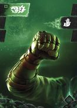
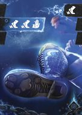
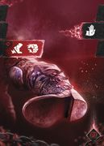
Combo Board Anatomy
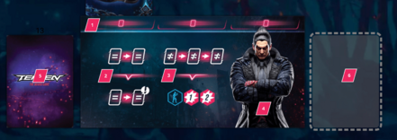
- Attack Slots
- Combo 1
- Combo 2
- Character’s portrait
- Deck
- Discard (face-down)
Gameplay Overview
In TEKKEN – The Board Game, one Round is the act of playing until a single Health Bar is depleted.
Each Round consists of alternating turns called Strings – which include the flow of actions (Attack Cards, Combos, etc.) performed by the active player.
During the game, players switch between two roles:
- The active player, the one who is building the String at the moment, is the Offensive player.
- The other one who’s trying to interrupt the String and regain the initiative by foreseeing the Offensive player’s Attacks is the Defender. This process of guessing is called the Punish Attempt.
The Offensive player chooses an Attack Card and plays it face-down in the first Attack Slot. The Defender guesses which type of Attack Card is played and declares one of the three Attack Areas. Then the card is revealed. If successful – the Attack is interrupted and the Defender gains initiative, placing the Punishment token in the first available Attack Slot, guaranteeing one unblockable attack. Otherwise, the Offensive player resolves the Attack Card and the additional effects it triggers.
Turn Structure: The String
The String involves one or more Attacks by the Offensive player, broken down into these steps:
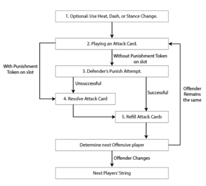
The Attack Steps
- Optional: Before playing an Attack Card, use Heat, Dash, or Stance Change.
- Playing an Attack Card: Play an Attack Card face-down.
- Defender’s Punish Attempt: The Defender declares Attack Area.
- Attack defended – Successful Punish Attempt: Discard and switch roles.
- Attack succeeded – Unsuccessful Punish Attempt: Resolve Attack (in any order):
- Resolving the Attack Types
- Symbols from Attack Card (and Extension, if Connected).
- Combo (if met conditions).
- Rage (once per Round, if revealed).
- Refill cards in hand (resolve Event, if drawn
STEP 1: Before playing an Attack Card (optional)
There are several possibilities to make your situation on the Stage slightly better. That’s not obligatory to do, but feel free to use them to prepare to fight.
- Stance Change – If the Offensive player has 3 Attack Cards of the same color or 3 Attack Cards with the same Attack Area in the hand before playing a card, they may reveal their hand to the opponent and then discard these cards to their discard pile face-down and draw 3 new Attack Cards from their deck.
- Dash – If the Distance is more than 1 Space between Characters, they may perform a Dash. Shorten the Distance to 1 Space between Characters’ Miniatures by moving the Offensive player’s Miniature as many Spaces as needed in the shortest possible way. ⚠️ NOTE: If you need to enter any special Spaces on the way, apply the effect.
- Heat – Once per Round, you may activate the Heat Token to gain an extra Attack Slot in the String. During that String, you will not lose initiative even if the Defender guessed the Attack Area correctly and blocked your Attack. Learn more on p. XX of this rulebook.
STEP 2: Playing an Attack Card
The Offensive player places 1 hidden (face-down) Attack Card into the first available Attack Slot on the Combo Board. Attack Slots are marked on the Combo Board, and the cards should be played above them, from the leftmost to the right.
💡 Pro Tip: Choosing which card to play is a deeply strategic decision. Some cards can trigger powerful bonuses or devastating Combos, while others may offer minimal or no immediate benefit. Since your opponent will try to guess the Attack Area, avoid obvious moves. Always balance deception with your main objective – dealing damage to your opponent.
STEP 3: Defender’s Punish Attempt
The Defender tries to anticipate which type of Attack Card the Offensive player has chosen and declares one of the three Attack Areas (High, Mid, or Low). Then the Offensive player reveals the Attack Card.
- Unsuccessful Punish Attempt: If the declared Attack Area does not match the one on the played card, the attack is not blocked. The Offensive player proceeds to the Resolving the Attack Card step.
- Successful Punish Attempt: If the declared Attack Area matches the one on the played card, the attack is blocked, the String is interrupted, and ends immediately. The Defender gains the Punishment Token and places it on their first available Attack Slot. The Offensive player discards all the cards from their Attack Slots face-down into the discard pile. Proceed directly to the Refilling Attack Cards in Hand step and switch roles (Exception: Heat, p. XX).
💡 Pro Tip: Punish Attempts are not just guesswork – they are calculated predictions. While guessing, try to analyze the situation on the Stage. You can find cards available in the Common deck on the VS tile and Character Special Attack Cards on their Character Cards. Track which cards your opponent has played, which Extensions they have on their previous Attack Card, and what Combos they could trigger based on their Combo Board. Also, study the positions of both Characters’ Miniatures on the Stage to anticipate the moves your opponent is most likely to make. Turning a well-read guess into a Successful Punish Attempt can shift the momentum entirely in your favor.
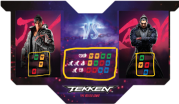
| ATTENTION! |
| If the Offensive player has the Punishment Token on the Attack Slot, they play an Attack Card as Punishment in that slot face-up instead: it cannot be predicted and blocked. In this case, skip the Defender’s Punish Attempt step and proceed immediately to Resolving the Attack Card.
⚠️ NOTE: You can get the Punishment Token in a Successful Punish Attempt. |
STEP 4: Resolving the Attack Card
The revealed Attack Card contains a set of Symbols to be resolved and can trigger Combo and/or Rage if the player decides so.
Available Attack Types
There are three possible Attack Types that could be activated in your string:
- Attack Card - The Symbols from an Attack Card itself and a Symbol from Extension, if it’s Connected (see below).
- Combo - The Symbols from a Character’s Combo Board, if the condition is met (you’ve played at least two cards in one String in certain colors).
- Rage - The Symbols from a Rage card become available to use when your HP is in the red zone.
⚠️ NOTE: You may choose which Attack Type to resolve first, and the Symbols within each Attack Type may be resolved in any order. However, if you started resolving Symbols from a specific Attack Type (e.g. Combo), you cannot intermix them with Symbols from another Attack Type (e.g. Rage).
Anytime you may skip resolving one or more Symbols played by you (i.e. you don’t have to Move anywhere, if you like your position on the Stage).
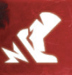 Move symbol |
MOVE
|
Move your Character’s Miniature to an adjacent free Space (not onto Walls or the other Miniature).
|
|||
Strike symbol (Deal 1 damage) Strike symbol 2 (Deal 2 damage) |
STRIKE | Deal X damage (opponent loses X HP). Mark the received damage by moving the HP marker on the HP bar by X Spaces towards the centre.
|
|||
Push |
PUSH | While in Close Range, Push your opponent away X Spaces from your Character in a straight line. If there is a Wall on the way, instead of moving further, they hit the Wall and take damage, depending on the Wall type:
1 damage for Regular Walls , 2 damage for Blasting Walls . You’ll find additional information about the Stage-specific Wall types on the Stage Help Sheets.
|
|||
 Sweep |
SWEEP | Knock down the adjacent opponent’s Miniature (lay it on its side on the current Space). While knocked down, they lose 1 additional HP for each Strike (count Strike Symbols, not damage dealt) received until their next String. At the beginning of their String, the Character gets up.
|
|||
 Stun |
STUN | Stun the opponent by placing a Stun Card in their next available Attack Slot above their Character’s Combo Board.
A player cannot play an Attack Card to a slot marked with the Stun card; therefore plays 1 Attack Card less for each Stun card during the next String. Return Stun Cards to the supply after that String.
|
⚠️ NOTE: Every Symbol in the game that affects an opponent only works when the opponent is in a Close Range (unless explicitly stated otherwise). That means your Characters’ Miniatures are standing on adjacent Spaces on the Stage.
Attack Card - Extensions
Extensions grant additional Symbols in specific Attack Areas for subsequent Attack Cards. Extension Symbols are located on the right side of each Attack Card. You can apply their effect if the Extension Symbol on a previous Attack Card in a String matches the Attack Area on the card that is being resolved. If they do match, they form a Connected Extension.
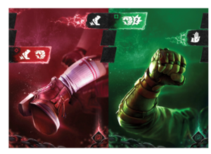
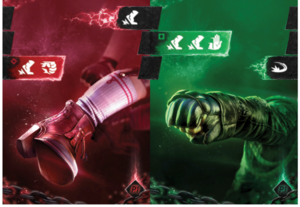
⚠️ NOTE: Special Attack Cards have 3 Extension Symbols (one for each Attack Area), while Common Attack Cards have only 1. So if you’ve played a Special Attack Card in the first Attack Slot, that means that any card played on the next slot will create the Connected Extension.
Combo
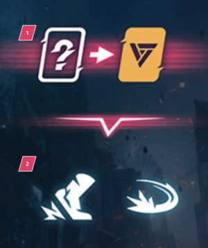
The Offensive player may trigger an effect from the Character’s Combo Board if a just-played Attack Card fulfills the requirements.
COMBO STRUCTURE:
1. Requirement
Combo effect triggers each time the player fulfills the requirement presented in the upper part of the Combo (above the --v-- sign). Usually, it specifies the order and color of Attack Cards to be played in one String.
2. Effect
Symbols that can be resolved if the Combo is triggered. Players may resolve Symbols from the Combo effect in any order or skip them if needed. You need to finish resolving Combo before switching to resolving any other Attack Types (i.e. the Attack Card or Rage Card).
COMBO REQUIREMENTS EXAMPLES
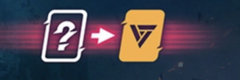
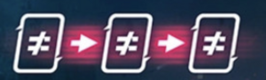
⚠️ NOTE: Sometimes you may trigger more than one Combo at the same moment. In this case, resolve the effects of both Combos separately.
Rage
There are two Rage Cards available for each Character. Players secretly choose one of them at the beginning of the Round. The chosen Rage Card is revealed and becomes available when the Character's HP drops to 6 or fewer (reaches the red section of the HP bar). From now on, the player may activate the effect of the Rage during their String. It can be resolved as one of the Attack Types when resolving the Attack. After activation, discard the Rage Card to the gamebox, it can’t be used again during this Round.
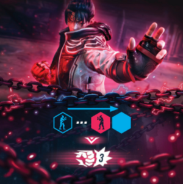
Available Attack Types Sumary
Symbols from different Attack Types, such as Attack Card, Combo, and Rage, cannot be mixed! Note that the Extension Symbol is a part of the Attack Card effect.
Example:
It’s the second Jin’s attack in the String. He has a blue Attack Card with Extension in the Mid Attack Area on the first Attack Slot.
1. Jin played a Mid Area yellow Attack Card, and Kazuya’s Punish Attempt failed.
2. Jin decides to resolve his Combo first and performs Move and Sweep.
3. Jin starts to resolve his Attack Card. He sees the opportunity to push Kazuya onto the Stun Space. To do so, Jin performs a Move to stand in a straight line with Kazuya and Stun Space.
4. Jin uses a Strike Symbol from Connected Extension to deal 2 damage (+1 for the opponent being knocked down) before he Pushes the opponent away. Kazuya receives a Stun card and places it above the first available Attack Slot.
Jin decides not to use the second Move Symbol from the Attack Card and ends his attack.
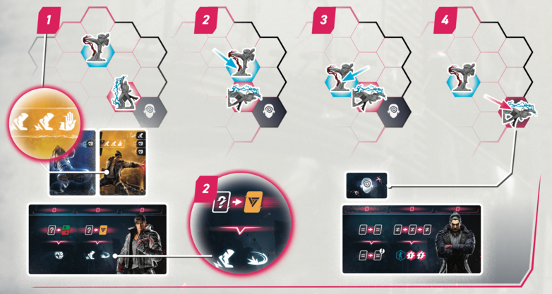
Each Character has their own unique set of components. The components and the Symbols on them introduce unique mechanics specific to that Character.
| How to read schemes: | |
|---|---|
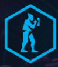 |
Your Character’s Miniature on a Space on the Stage |
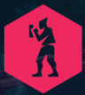 |
The opponent’s Character Miniature on a Space on the Stage |
| Empty Space on the Stage, where you would need to move your Character’s Miniature. | |
| A Space between you and the opponent. | |
| Spaces where the opponent should stand on to receive the indicated damage, depending on the positions on the Stage.
Note: This is not a Strike Symbol. | |
| Any distance in a straight line between Characters’ Miniatures, including Close Range. | |
| Blue arrow: Direction in which you have to move your Character’s Miniature in a straight line.
Resolve all special Spaces on the way. | |
| Red arrow: Direction in which the opponent’s Character Miniature must be moved.
Resolve all special Spaces on the way. | |
 |
Dotted arrow: move a Character’s Miniature to any of the indicated Spaces. Do not resolve special Spaces on the way. |
| Push the opponent by X Spaces. Unlike the basic Push Symbol (pushing hand), this one can be resolved while in Distance. |
STEP 5: Refilling Attack Cards in Hand
The Offensive player draws as many Attack Cards from their deck as needed to restore the hand to 3 cards. If you need to draw a card and your deck is empty, shuffle your discard pile to form a new deck. If an Event Card is drawn, immediately reveal it and trigger its effect, then discard it to the discard pile.
Additional Mechanics
Heat
Each player begins the Round with a charged Heat Token. Once per Round, before playing an Attack Card player may decide to activate the Heat Token.
Heat Activation:
- The Offensive player gains an additional fourth Attack Slot (mark it by placing the Heat Token on the right side of the Combo Board), and their String does not end if the Defender blocks an Attack Card (effectively guaranteeing the possibility to play 4 Attack Cards in this String).
- If the Attack Card is blocked while Heat is activated, the attacking player discards the played card to the discard pile and places a Stun card in that Attack Slot. Attacks are interrupted, but the String is continued.
- The Defender does not gain the Punishment Token after a successful Punish Attempt.
After activation, turn the Heat Token to the discharged side. It can’t be used again during this Round.
⚠️ Note! The Offensive player can also activate their Heat Token after resolving their 3rd Attack Card, to make a slot for the 4th card.
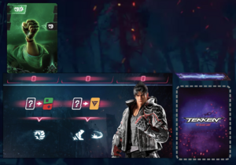
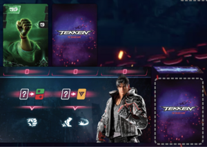
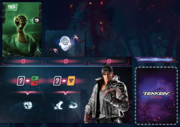
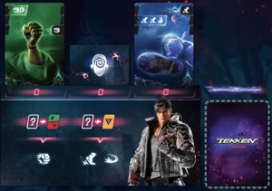
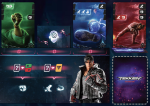
Events
Each Stage contains Event Effects. During the setup, players shuffle up to 2 Event Cards into their Attack Cards decks (depending on Stage special rules).
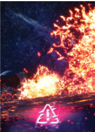
Determining the Next Offensive Player
The Offensive player continues the String (remains the Offensive player) and proceeds to Playing an Attack Card step if at least one Attack Slot remains available and either of the following is true:
- The Punish Attempt was unsuccessful (the last Attack Card was not blocked).
- The player has activated Heat during the current turn (regardless of whether the last Attack Card was blocked).
Otherwise, the players are switching roles. In that case, all cards placed on the Offensive player's Attack Slots should be discarded (move Attack Cards to their discard pile and Stun Cards back to the supply). Knocked down Characters stand up.
Then the Offensive player’s String is over, and they become the Defender for the next String.
⚠️ NOTE: The discard pile should be hidden, preventing the opponent from seeing the cards in it. During the Round, players cannot look through the cards in their decks or discard piles.
End Of The Round
The Round ends immediately when at least one Character is Knocked Out – their HP is reduced to 0. The winner of the Round is the Character with any remaining HP. In case of a tie, both players are considered winners.
DESCENT INTO SUBCONSCIOUS
In TEKKEN – The Board Game, ignoring the Stage is a quick way to lose — even against a moderately experienced player.
Every Stage has its own gimmicks, and this one has two of them. Here, strategic planning is key: where you and your opponent stand matters. Being on cracked glass or close to a wall can give away your intentions — and help you predict your opponent’s next move. At the same time, you’ll need to account for these factors in your own actions to avoid being punished.
Stage Gimick: Floor Brake
- When you attack an opponent standing on a Cracked Floor space, the system automatically reveals Breakage tokens equal to the number of Strike symbols in your attack (damage is not counted).
- There are 3 cracked tokens and 3 empty ones.
- When the 3rd cracked token is revealed, the Stage flips to the Underside — you’ll see a new layout on screen, with both Characters staying in the same relative positions.
- The Offensive player gains a Punishment token, making their next attack unblockable.
- Cracked Floor spaces marked in red show where the cracks are located on the other side of the Stage.
- Breaking the Floor Again
- If the 3rd cracked token is revealed again on the Underside, the Stage flips back to the Upperside.
- The Offensive player gains another Punishment token, and all tokens are reset.
Key definitions
Possible positions
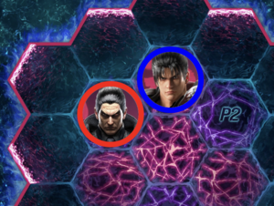
Close Range – a situation on the Stage when two Characters’ Miniatures are placed on adjacent Spaces. Each Symbol that affects your opponent can be resolved only when your Characters’ Miniatures are in a Close Range. Otherwise, you just punch the air and nothing happens. Learn more about Symbols further in this rulebook.
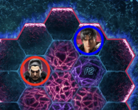
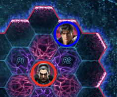
Distance – a situation on the Stage when two Characters’ Miniatures are NOT standing on adjacent Spaces. Whenever you would need to count Distance X Spaces away, X will be the number of Spaces between Miniatures in the shortest way.
- a) A straight line of hexes, the Distance in this example is 1 Space away.
- b) Not a straight line of hexes, the Distance in this example is 1 Space away.